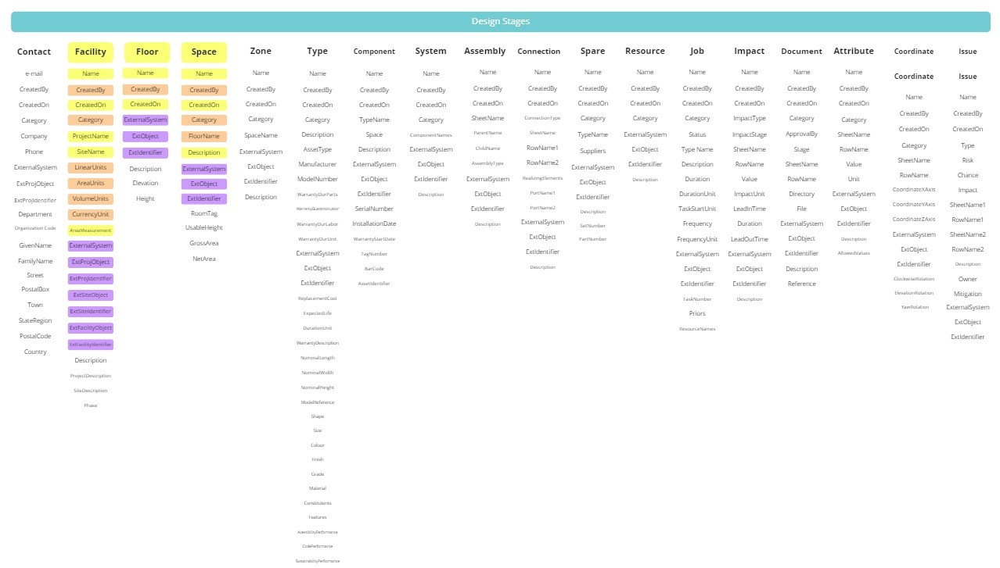
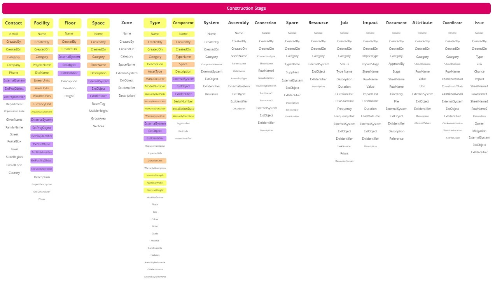
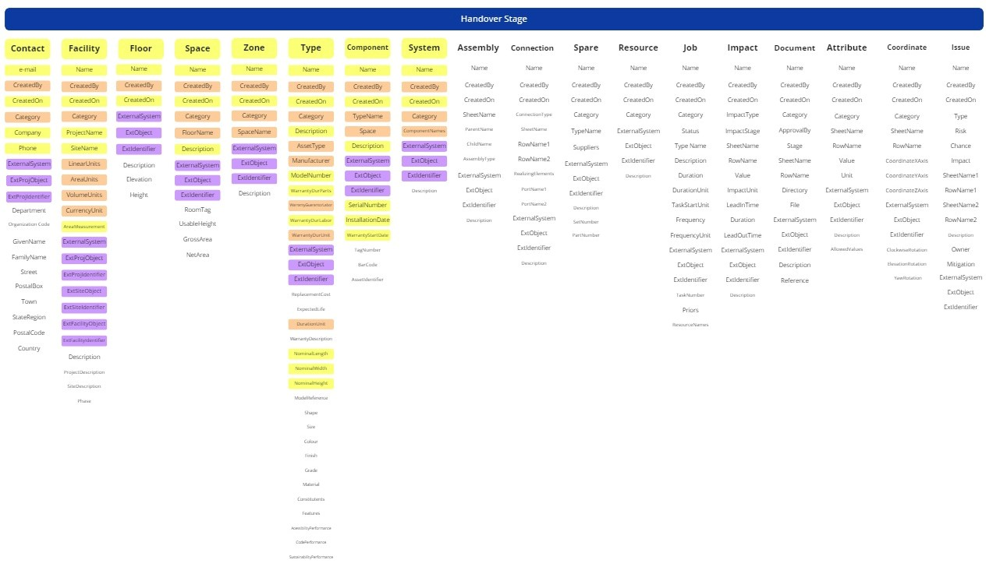

The COBie data requirements evolve as a project progresses. Each stage adds a new layer of detail to the spreadsheet, shifting the responsibility from designers to contractors and finally to the handover team.
DESIGN STAGE

Focus: Spatial data, zones, and preliminary equipment types.
CONSTRUCTION STAGE

Focus: Component instances, serial numbers, and manufacturer data.
HANDOVER STAGE

Focus: Final validation, maintenance schedules, and spares.